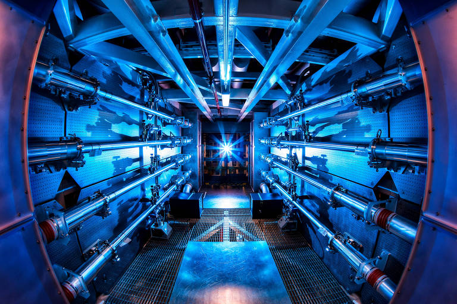
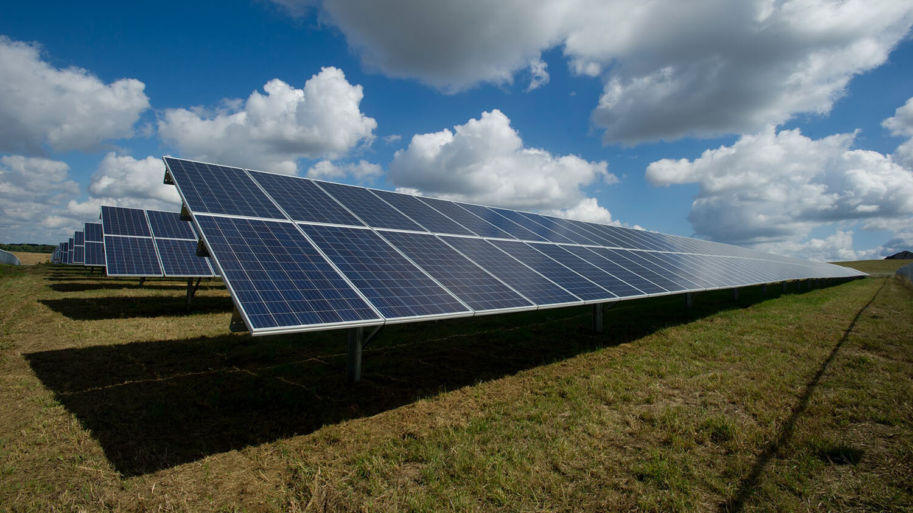

Descoberta Revolucionária na Ciência Revela Nova Forma de Armazenamento de Energia
Cientistas de renome internacional anunciaram hoje uma descoberta que promete revolucionar a maneira como armazenamos energia. Em um estudo publicado na prestigiada revista científica "Nature Energy", uma equipe de pesquisadores da Universidade de Tecnologia de Massachusetts (MIT) revelou uma nova forma de armazenamento de energia que poderia transformar drasticamente a indústria de baterias.
A pesquisa se concentrou em nanomateriais bidimensionais, que são materiais extremamente finos, com uma espessura de apenas alguns átomos. Esses materiais têm propriedades elétricas únicas que os tornam candidatos ideais para aplicações de armazenamento de energia.
O líder da equipe de pesquisa, Dr. Maria Santos, explicou: "Descobrimos que ao manipular cuidadosamente a estrutura desses nanomateriais, podemos aumentar significativamente sua capacidade de armazenamento de energia. Essencialmente, criamos uma espécie de 'superesponja' que pode absorver e liberar energia de forma muito mais eficiente do que as baterias convencionais."
O potencial dessa descoberta é imenso. Se implementada em larga escala, essa nova tecnologia poderia significar baterias menores, mais leves e de maior capacidade, tornando-as ideais para uma variedade de aplicações, desde dispositivos eletrônicos portáteis até veículos elétricos.
Além disso, essa tecnologia promete ser mais sustentável do que as baterias atuais, pois utiliza materiais mais abundantes e menos tóxicos em sua fabricação.
Os cientistas estão agora trabalhando para aprimorar ainda mais essa tecnologia e esperam que ela esteja pronta para comercialização dentro dos próximos cinco anos.
Essa descoberta representa um marco significativo na busca por soluções de energia mais eficientes e sustentáveis, e tem o potencial de transformar fundamentalmente a maneira como interagimos com a tecnologia no futuro.